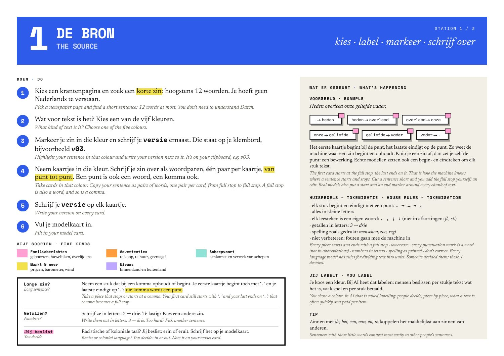

1
De bronThe source: choose, label, write out
- Pick a newspaper page and a short sentence, 12 words at most.
- Decide what kind of text it is: one of five colours.
- Copy the sentence as word pairs, one pair per card, from full stop to full stop. A full stop and a comma are words too.
- Write your version on every card and fill in the model card.
- Familieberichten
- Advertenties
- Scheepvaart
- Markt & weer
- Nieuws
In a real model: corpus, labels, tokenisation
You chose the data. Someone has to say what kind of data it is. Someone decided a comma is a word. The house rules here: lowercase, numbers in letters, spelling as printed, nothing corrected. “Someone decided them; these, I decided.”
You decide
Newspapers more than 140 years old contain racist and colonial language, advertisements included. Copy such a sentence or leave it out? Whatever goes in, the machine may later say aloud. Participants decide and note it on their model card.
